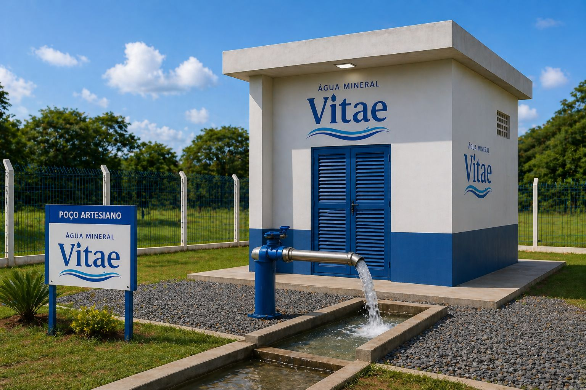
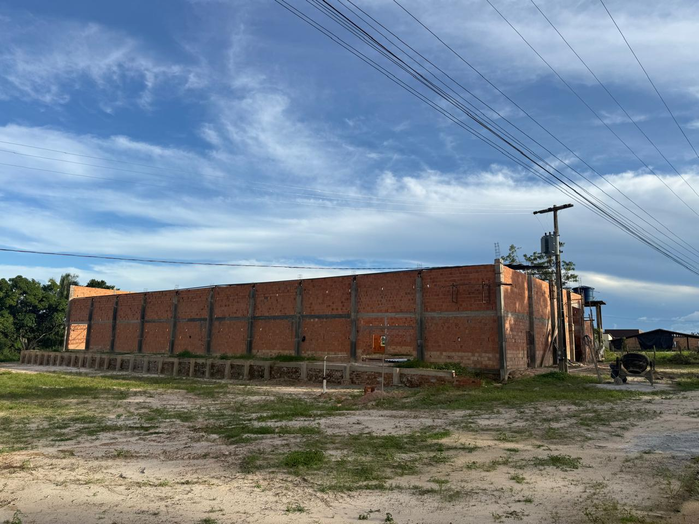
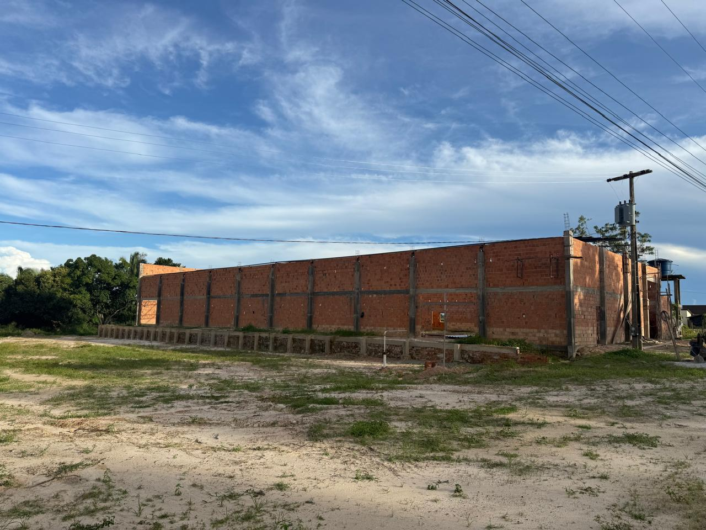
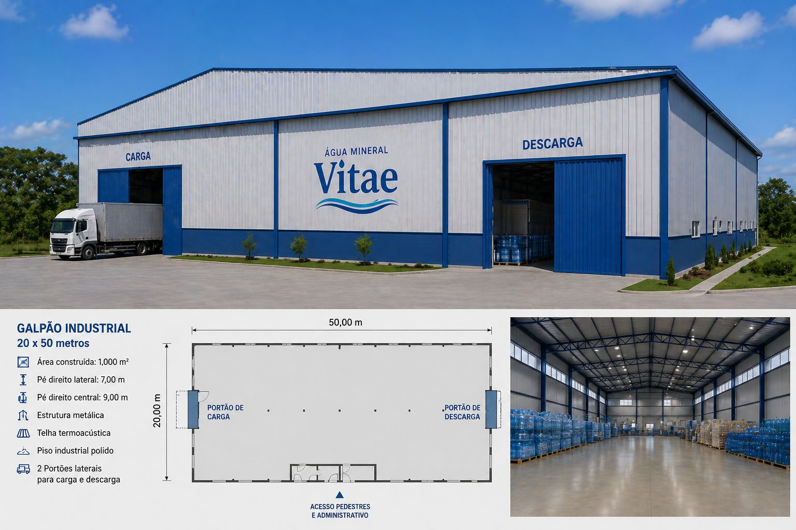
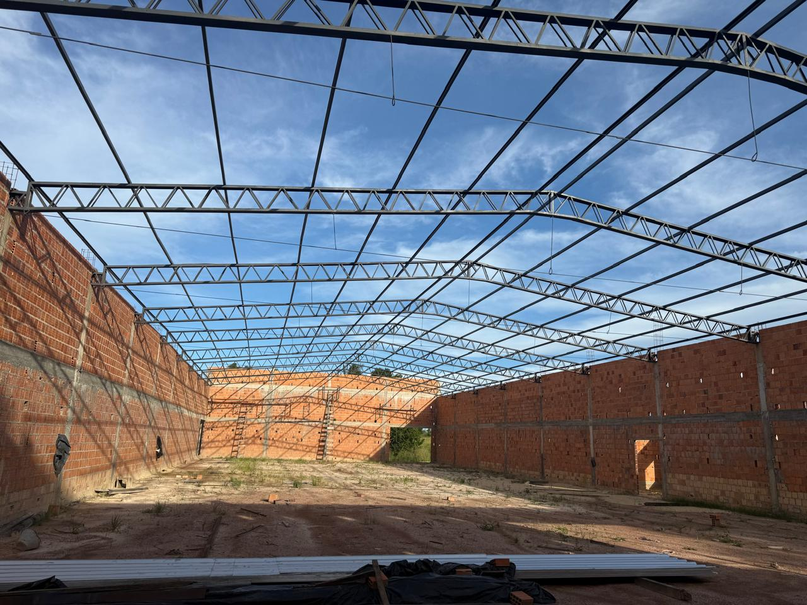
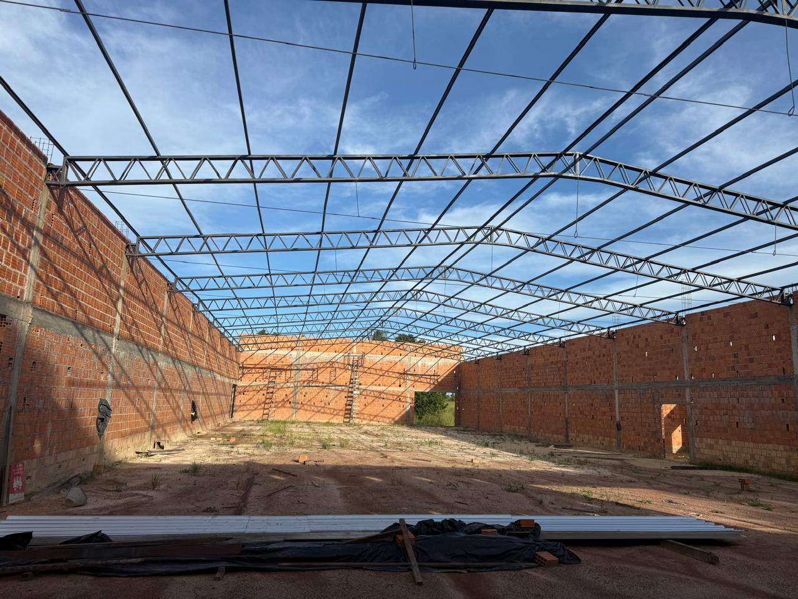
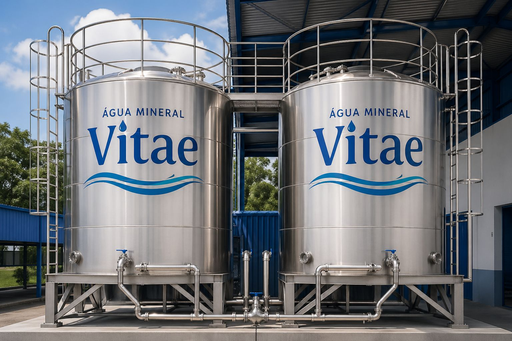
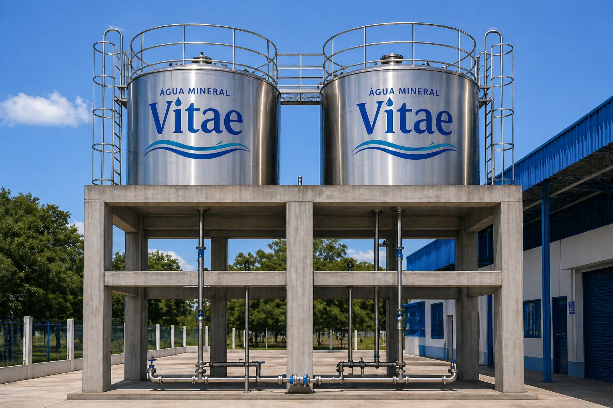
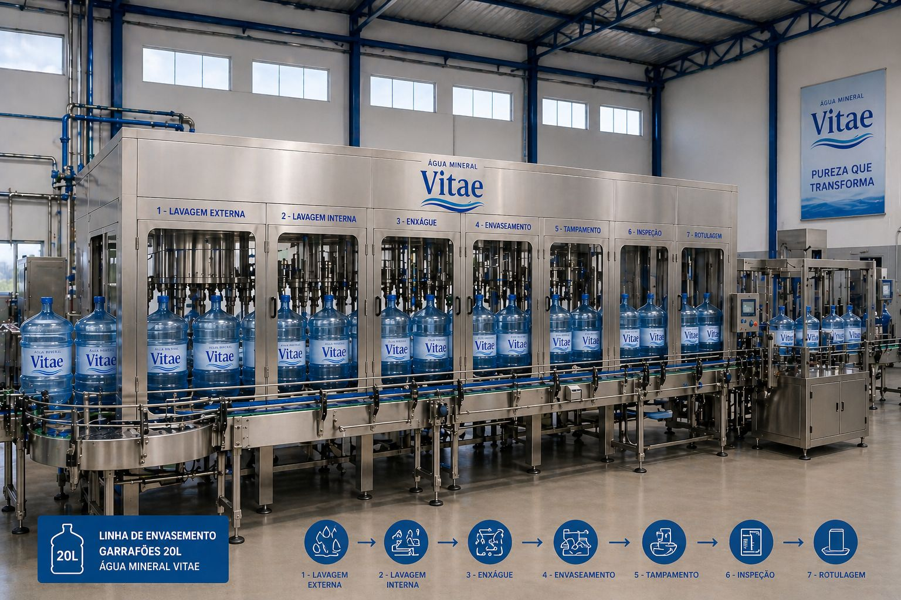

No coração do Maranhão · Em Santa Inês
Uma descoberta natural extraordinária.
A Descoberta
Captada de formação geológica privilegiada no interior do Maranhão,
a Água Vitae traz à superfície o que a terra levou séculos para criar.
O Produto
Água Mineral Natural

A Fonte

Vista exterior do galpão principal — Santa Inês, Maranhão

Alvenaria estrutural com colunas em concreto armado — obra em fase final

Infraestrutura Industrial
2 portões de acesso · Estrutura dimensionada para operação industrial em larga escala

Treliças em aço galvanizado de alta resistência — vão interno de grande porte

Infraestrutura

Reservatórios
Aço Inoxidável — INOX
Higiene e conservação total da água desde a captação até o envase.

Aço inoxidável grau alimentício — 60.000 litros de capacidade individual

Linha de Produção
Qualidade & Conformidade
Status da Obra
Oportunidade de Investimento
Até 4 vezes superior à caderneta de poupança
+ Valorização patrimonial da empresa ao longo do tempo
Empresa com base física construída · Mercado em crescimento constante · Fase final de implantação
Entre em contato com nossa equipe para investimento, parcerias e distribuição.